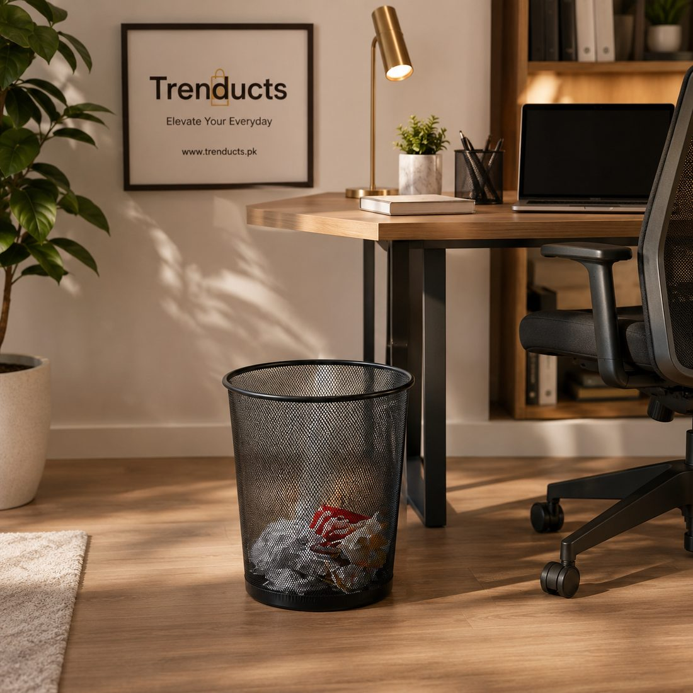
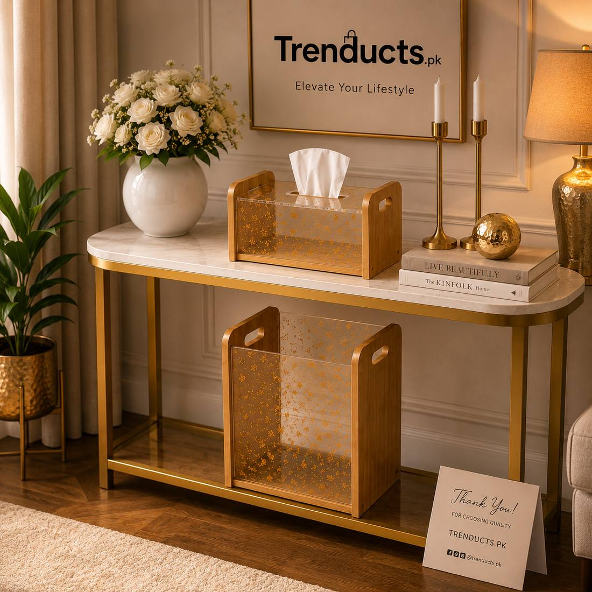
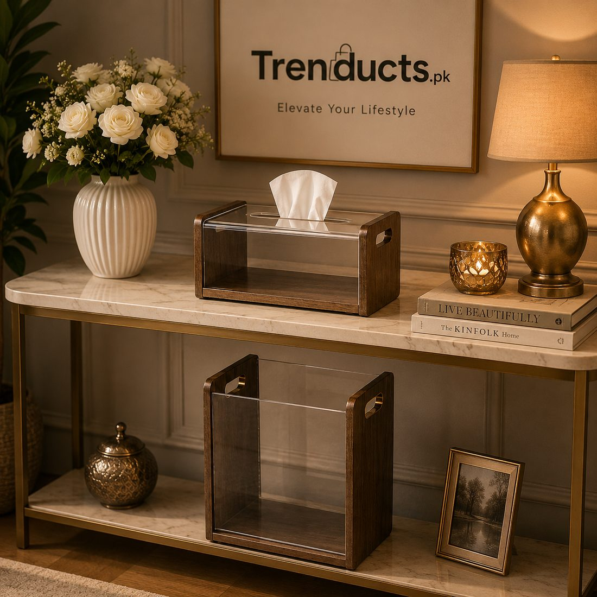

A dustbin in every room keeps homes cleaner, but the wrong bin looks ugly and smells. Here is how to choose the right dustbin for bedrooms, bathrooms, kitchens and drawing rooms.

Dustbins are rarely the first thing we think about when decorating a home. Yet without them, tissues land on side tables, wrappers end up under sofas and children's pencil shavings collect on the study desk. In many Pakistani homes, there is one big bin in the kitchen and maybe a plastic one in the bathroom, and everything else gets carried around or left lying.
A small, well-chosen bin in each room makes cleaning easier and keeps the house tidier. It does not have to look like an afterthought. This guide explains what kind of bin suits each room.
The kitchen needs the largest bin, with a lid to control smells and keep away flies and cockroaches. A pedal bin or a bin with a swing lid lets you throw waste without touching it, which is more hygienic when your hands are covered in dough or masala. Use liners and empty it daily, especially in summer, when organic waste starts smelling within hours. If you separate wet and dry waste, use two bins side by side.
Bathroom bins should be small, with a lid, and made of water-resistant material. They hold tissues, cotton and empty bottles. Choose a design that is easy to wipe and does not rust in humid air. Empty bathroom bins every two days.
In bedrooms, bins catch tissues, receipts, wrappers and hair. A mesh metal bin is light and rust-proof, and because it is open, it reminds you to empty it often. For master bedrooms, a bin that matches the furniture finish looks elegant. Place it near the bed or the dressing table where most waste is created.

In drawing rooms, a bin should blend into the decor. Wooden-texture or decorative bins look like part of the furniture set, and some come in matching sets with a tissue box, which ties the room together nicely. These sets are especially popular for drawing rooms where guests sit. To compare sets and sizes, browse the collection of dustbins and trash cans at Trenducts.
Children create a surprising amount of waste: pencil shavings, paper scraps, snack wrappers. A small, colourful bin next to the study desk encourages them to throw things away themselves. Teach them to empty it into the main bin once a week as part of their chores.

Bins in every room also make it easier to see how much waste a household produces. Try reducing it: use cloth bags for shopping, refill bottles, compost vegetable peels if you have a garden, and separate paper and plastic for recycling where local collectors accept them. Many cities have informal recyclers, kabaariwalas, who buy paper, plastic and metal.
The same logic applies outside the home. A small bin under the office desk keeps the workspace neat, and a compact bin or bag in the car stops wrappers and tissues from piling up on the floor and seats. In shops, clinics and offices, a clean, covered bin near the entrance encourages visitors not to litter. Clean spaces start with having a convenient place to throw things away.
Size matters more than people think. A bin that is too small overflows daily; one that is too big holds waste for too long and smells. Match the bin to how much waste each room really creates.
A suitable dustbin in each room is a small change that makes a home cleaner and easier to manage. Choose covered, hygienic bins for kitchens and bathrooms, stylish ones for bedrooms and drawing rooms, and fun ones for children. Clean them weekly and use liners, and your home will stay tidier with less effort.